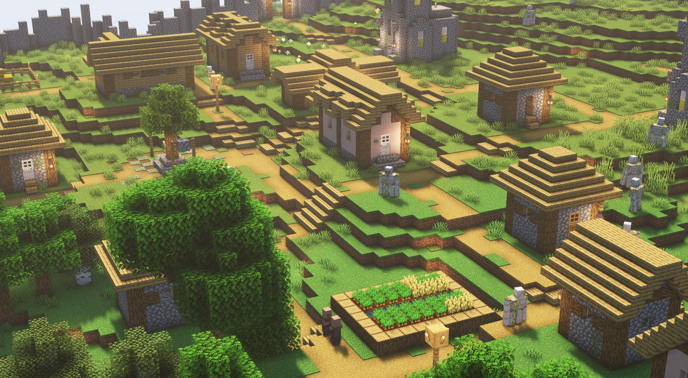
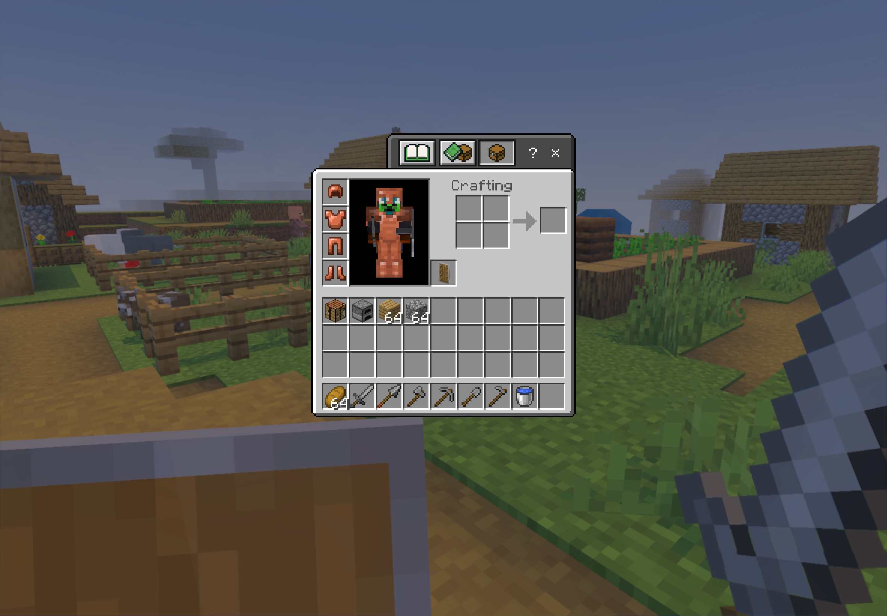
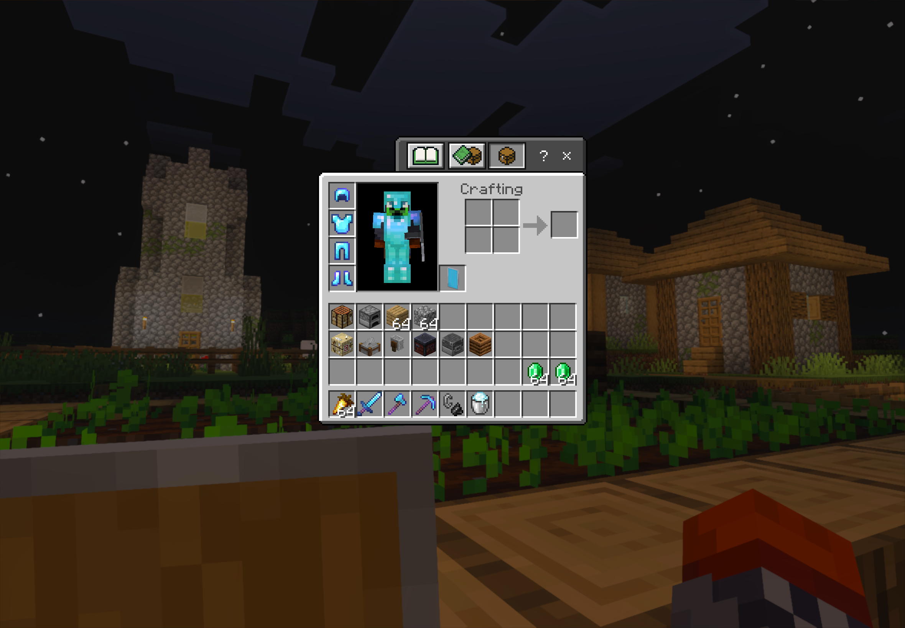
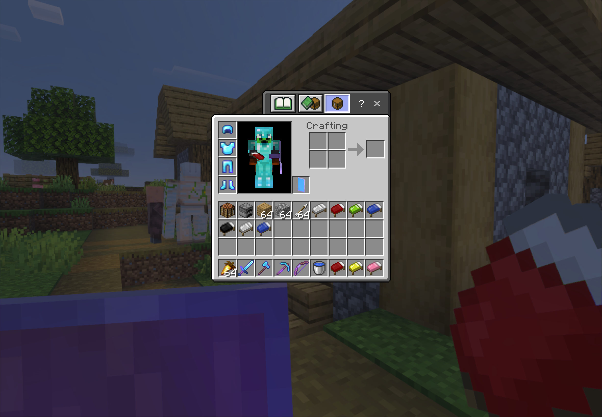
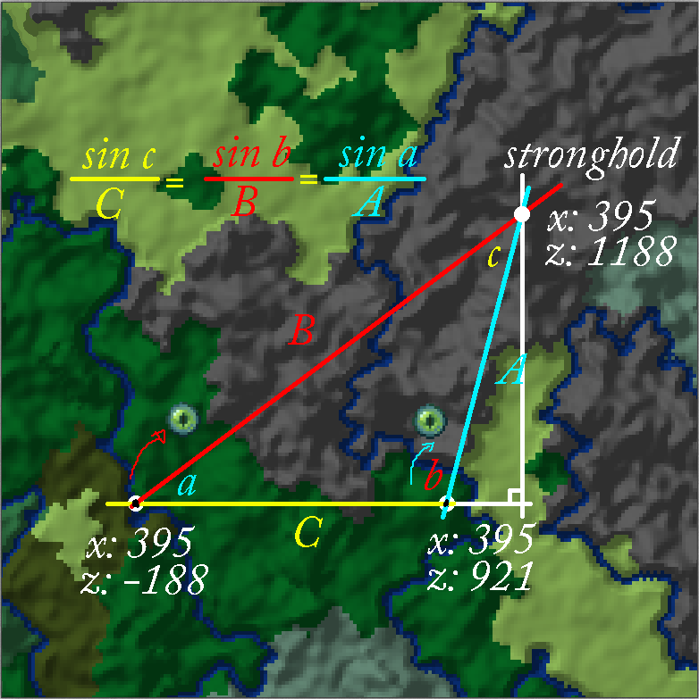
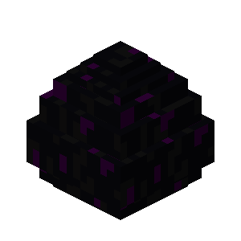
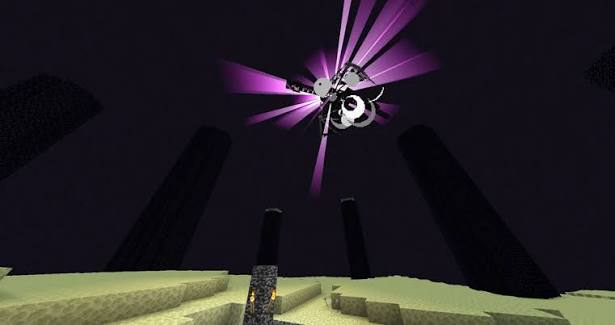

In Minecraft Hardcore mode, one death deletes your world forever, making immediate safety critical. First, punch a tree to harvest three logs and craft a crafting table. Next, craft four sticks and a wooden pickaxe. Mine 3 stones and craft a stone axe to chop down the rest of the tree. Then, travel to locate a village for safety. Along the way, kill 3 identical sheep for wool, and save three wooden planks. If night falls before you find a village, craft a bed immediately to skip the night and avoid dangerous monsters. Once you reach a village, you are ready to move to the next step.

At this stage in Minecraft Hardcore, it is all about securing your basic gear. You likely have some wood, a stone axe, a wooden pickaxe, and a crafting table—maybe even a bed or some wool. Your next moves are critical: mine enough stone for a full toolset, loot every chest and food source in the village, and craft a full set of copper armor. If you manage to find iron, prioritize a shield and a water bucket immediately. If you would like iron armor, it is probably a better choice if you find it in the village or are willing to risk exploring a cave.
To crush this strategy, you will need a massive stockpile of emeralds. The fastest way to get them is by trading with a Fletcher or a Mason. Fletcher's turn 32 sticks into an emerald, while Masons swap 10 clay blocks for one. If you cannot decide, look at your surroundings: choose the Fletcher if you have plenty of trees, or the Mason if clay is nearby. You can even use both if they are already in the village! Later, you can trade your emeralds with weaponsmiths and toolsmiths to buy iron axes and shovels.

Next, we need to gather our armor, tools, and food. To do this, we must level up specific villagers to Master rank. For this strategy, you will need one farmer, one weaponsmith, one to three toolsmiths, and two to three armorers. Start by using the armorers to secure a full set of diamond armor. Next, visit your toolsmiths to grab a diamond axe and a diamond pickaxe—keep in mind it might take a few different toolsmiths to unlock the pickaxe trade. If you prefer fighting with a sword, trade with the weaponsmith to get your diamond blade. Finally, stock up on food by trading with the farmer for a stack or more of golden carrots.
With your gear ready, you need one final upgrade before entering the Nether: enchantments. Trading with villagers won't give you the exact setups you need. Every piece of gear must have Mending and Unbreaking III. For your weapon, prioritize Smite V and Looting III. Your pickaxe needs at least Efficiency II to instantly mine Netherrack, plus Fortune III if you plan on bartering. For armor, use Protection IV on all pieces except your leggings—give those Fire Protection IV to survive blazes. To get all of these enchantments, you can use a librarian. Finally, pack these essentials: flint and steel, a powdered snow bucket, two milk buckets, 10 obsidian pieces, and building blocks.
Equipped with your upgraded gear, you are ready to conquer the Nether. Your primary goal upon arrival is locating a nether fortress. Inside, prioritize finding a blaze spawner while staying alert for dangerous wither skeletons. To secure the area, block off all hallways leading away from the spawner. If a wither skeleton strikes you, eliminate it immediately and drink your milk bucket to clear the effect. Thanks to your Smite V and Looting III enchantments, defeating the blazes will be fast and efficient. Once you collect your required blaze rods leave the nether fortress and go to the next step.
Now that you have blaze rods, you need at least 16 ender pearls to craft your eyes of Ender—but do not craft them yet! You can efficiently gather them using three distinct methods based on your current resources. If you brought a Fortune III pickaxe, mine nether gold ore, craft gold ingots, and barter with piglins until you hit your target. If you lack Fortune III but spot a warped forest, enter this relatively safe biome, craft a boat, and easily trap and kill the abundant endermen. Otherwise, return to the overworld, use a spare blaze rod to craft a brewing stand, employ a village cleric, and trade your way to the required amount. After you get your ender pearls do not craft them into eyes of ender yet go to the next step.

Now that you have your Ender pearls and blaze rods, prepare your gear before hunting the stronghold. Swap your powdered snow for a water bucket to ensure safety and navigation in the End. Craft nine beds for the dragon fight, note your base coordinates, and break your bed to unset your spawn point. Carve a pumpkin with shears to wear against Endermen, and restock until you have at least 32 golden carrots. Finally, secure a Power V bow; pack one arrow if it has Infinity or a full stack of 64 if it has Mending. With these essentials ready, proceed to step 9.

If you listened closely, you are in luck. To locate the stronghold using "triangulation", first craft exactly two eyes of ender from your blaze rods. Throw the first eye, note its trajectory and your coordinates, and pick it up if it drops. Next, walk 50 to 200 blocks sideways from that path and throw the second eye. Map the imaginary intersecting lines of both throws from their respective release points; the stronghold rests where they cross, often beneath a village. Finally, navigate the stronghold, craft only the remaining eyes needed to activate the portal, and proceed to step 10.

You are finally in the End, meaning it is time to defeat the Ender Dragon! First, safely reach the main island by using an ender pearl if you spawn in the void or by mining upward with your pickaxe. Next, build a safe zone to farm 16 to 32 ender pearls: construct a floating 3x3 platform three blocks in the air, stand on it, stare at nearby Endermen, and safely slay them from below. Once you have your pearls, equip a carved pumpkin to prevent future Enderman agro. To tackle the end crystals, use a water bucket to scale the tallest tower, destroy its crystal, and use this high vantage point to snipe all other uncaged crystals with your bow. For the caged crystals, you can either shoot through the gaps from below, build up, or water-bucket up to break them. Finally, focus on the dragon: whenever it perches on the exit portal, place and explode beds right beneath its head for massive damage, and use your bow to chip away at its health while it flies. Once the dragon falls, move to step 11 to claim your hard-earned loot!

Many players miss their Ender Dragon loot because it falls into the exit portal, but you can easily recover it. First, strike the dragon egg once to teleport it, then break its base using a torch. After gathering your initial XP, step through the portal to return home, where a massive motherlode of remaining XP will be waiting for you. Congratulations on beating hardcore Minecraft—now the next adventure is entirely up to you.